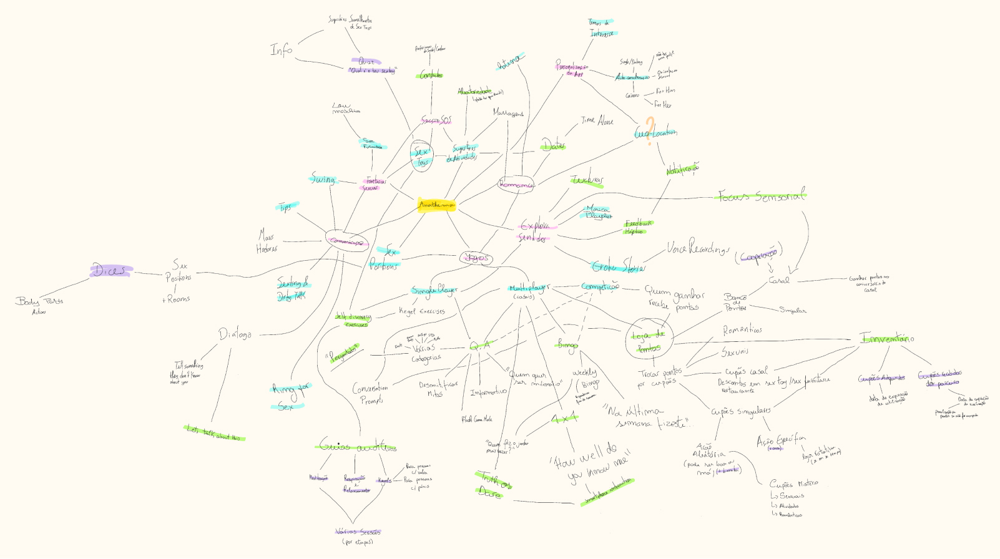
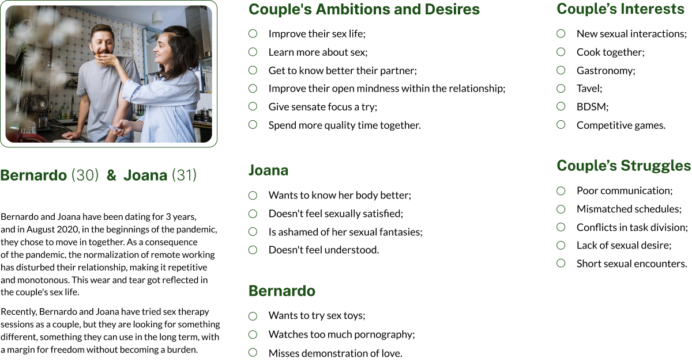
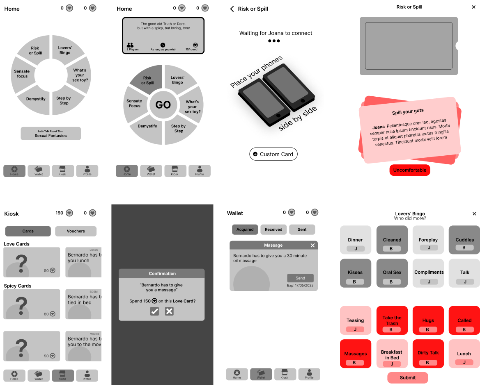
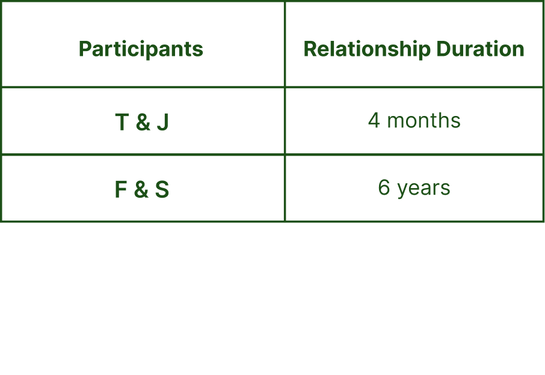
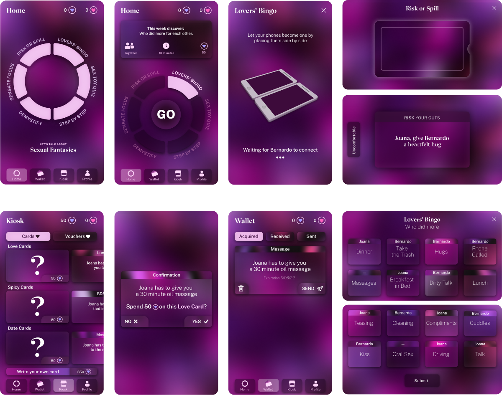
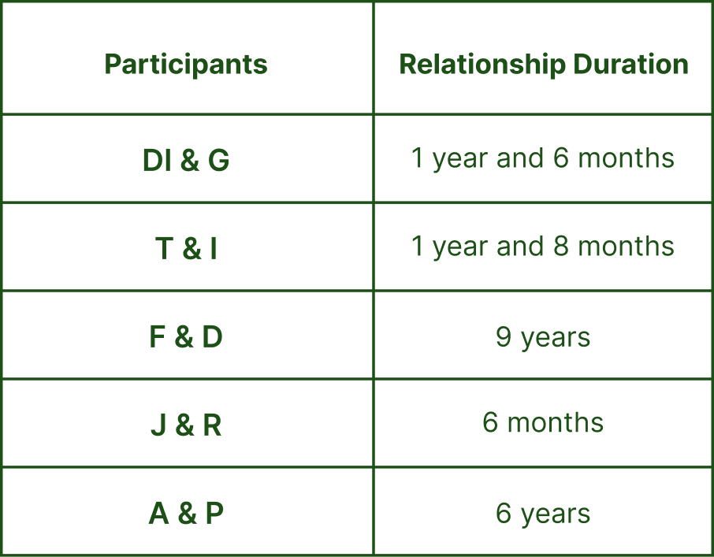

Home
Home Anathema
Anathema- afeiçoa-te
- Sky Tales
- Mint Insight
- [UP] Arte
- GG WP
- desenha-me um poema.
- About

“Anathema” is an app that aims to improve young couple’s sexual health.
Anathema is a mobile aplication designed in a partnership with Fraunhofer AICOS in the context of their project with the same name that aims to develop "the first smartphone-delivered sexual health promotion programme that seeks to adapt traditional face-to-face interventions for older adults, people with chronic diseases, and their partners". In our project we were assigned a different target audience but kept the improvement of couple’s sexual health as the aplication’s main goal.
During the development of the project, we had Doctor Ana Barros and Joana Couto's (from Fraunhofer AICOS) mentorship.
Project developed during the Interaction Design, Web and Games Specialization
March 2022 - June 2022
Software
Figma
Adobe Ilustrator
“Sexual health is a state of physical, emotional, mental and social well-being related to sexuality; it is not merely the absence of disease, dysfunction or infirmity.”
World Health Organization (2002)
User Research
In order to understand better the sexual health theme, we considered important not only to acknowledge the perspective of potential users of the application, but also the perspective of health professionals in the area of sexology and psychology.
Questionnaire
Since sexuality is a sensitive topic, we chose to develop and share a questionnaire aimed at people over 16 years old and that have had some kind of sexual experience before were we tried to understand how we could improve people's sexual satisfaction, what types of topics we should address in the application, as well as the type of dynamics we could explore. We gathered 533 answers.
Promote romantic behaviours
We understood that the more romantic satisfacticon in a couple translates in sexual satisfaction. Thus, the app should encourage not only sexual but also romantic behaviours.
Stimulate communication
It was considered important to stimulate communication between the couple through the app, given that the more the people comunicate with their partners about different aspects related to their sex life, the more satisfied they feel about it.
Encourage the use of sex toys
It was understood that sex toys should be promoted and encourage in the app given that only 9% of the respondants don't have interest in trying them. From the 91% that has interest 46% hasn't tried them yet, mainly because they haven't thought about it.
Interview
An interview was conducted to Doctor Raquel Pereira, from the SexLab of the Faculty of Psychology and Education Science of the University of Porto in order to better understand the context of sex therapy.
With the interview we understood that our target audience would be couples between 25 and 35 years old. Although Doctor Raquel Pereira’s patients are usually in the age group of 20 to 30 years old, we wanted to target couples that live together and have habits and routines that could take part in the aplication, thus we added 5 years to this age group.
We also understood that the aplication should demystify sexual myths as well as predispose couples to new sexual experiences and self-discovery .
Moodboard
We developed a moodboard with mobile apps, physical and digital games within the sexual theme. The results gathered apps that promoted mind and body exploration, self discovery and included audio sex stories.
We realized that there are more physical games than digital ones, and that these are usually adaptations from classic board games. We noticed that the majority of the games uses randomness to create more unique experiences.
Brainstorm
Starting from themes related to sexuality we developed a brainstorm that directed us to our final concept.
We decided that in the aplication the user could obtain points through games and activities alone or with their partner that could be exchanged for romantic cards, sexual cards or couple activities cards that the user could send to their partner.
We included co-operative games and activities in which the couples could obtain a second type of points, shared between them, and that can be exchanged for vouchers, namely for sex shops and hotels.
User Persona
User Scenarios
Download the App
Joana and Bernardo both had an exhausting day of remote working, full of meetings, where they barely saw each other since they don't like to work in the same room. In the evening, after a day that caused them an extreme level of fatigue, Joana remembered a magazine she had of cocktail recipes for them to make and abstract themselves. While Joana is getting ready to make dinner, Bernardo is putting together the ingredients for the cocktails. With his eyes on the magazine, Bernardo notices an advertisement in the corner of the page. An app that seems to open doors to new sexual experiences and interactions in a playful and even competitive way, he comments with Joana and they both download the app to try it after dinner. Already more relaxed after the meal, they make their way to the app. They notice that before they can try the games and activities they have to pair their accounts. As they do so, the app asks for an important date of their relationship, which they enter the date they met. So Joana and Bernardo take the first step of many towards what will become a better, healthier sex life.
Explore Audio Guides and Coupons
Joana takes advantage of the fact that Bernardo is on a business trip to explore her body with the help of the app. Following the audio-guides given by the app, she gets to know points of pleasure of her body that, until then, were unknown to her. Then she redeems the points she earned for a random romantic coupon, in which she buys a massage from Bernardo. Bernardo picks up his cell phone to read the notification he received, smiling, knowing that when he gets home he will have a special moment with Joana.
Play Demystify to Buy a Coupon
Bernardo has been craving a walk by the beach. In order to get Joana a coupon from the Kiosk, Bernardo decides to do a few rounds of Demystify in hopes of getting the missing points. While playing, he realizes that he is, in fact, quite mistaken when it comes to matters of Sexology. After a few rounds, Bernardo not only manages to collect the necessary points for the coupon, but he also becomes much more informed and starts commenting on some curiosities with Joana, taking advantage of this and acquiring a Date Card coupon.
Find out “What's your sex toy", and initiate the activity"Sensate Focus" in order to buy a voucher.
Bernardo noticed that the app offered a quiz:"What's your sex toy"; he found it interesting and decided to answer. In the process of answering the quiz, Bernardo became even more interested in the topic of sex toys, when he saw the result he thought it would be a good opportunity to know Joana's opinion on the subject. In conversation, Joana showed fear for the fact that it is a high price and they may not like it, however, Bernardo reminds her that there is a discount coupon for a Sex-Shop in the Kiosk. Although the coupon costs a lot of points, they decide to work together to get them, using the Sensate Focus exercise, since it is a cooperative activity. Given that this is a prolonged exercise, it nevertheless has a high reward, not only in terms of points for the coupon, but also in terms of positive consequences for the relationship.
Play this week’s “Lovers’ Bingo” and “Risk or Spill”
On a Saturday afternoon after lunch, Bernardo and Joana are on the balcony sunbathing while they relax. Being the weekend, there is a new Bingo rotation, and it is never too late for a good healthy competition between a couple. Joana starts checking off some of the activities, and notices that perhaps if she had shown more love during the week through certain activities, she could have completed more items, getting a more complete game card for the week. Bernardo, on the other hand, left only a couple of items uncompleted, staying ahead of Joana and earning the full Lovers' Bingo points. Seizing the spirit of the competitive mode, Joana wants revenge. Pouring herself a glass of wine, she challenges Bernardo to participate in rounds of "Risk or Spill", through which they reveal things they had never told one another, while also performing challenges that elevate the relationship both on a romantic and sexual level..
Talk about the theme of the day
Bernardo opens the app and notices that the suggested conversation topic for today is about sexual fantasies. During the lunch break, he takes the opportunity to ask Joana if she has any fantasies that she has never revealed to him. While they have lunch they share their desires and reflect on what they would both like to try.
Requirements
A list of functional, informative, ambiente/context, usability, experience and user requirements was created and can be consulted here .
.
Wireflows
Low Fidelity Prototype
Usability Tests - First Round
For the first usability tests we had two couples interacting with our low fidelity protytpe. With these users, we understood that we should follow a colour scheme focused on purples. Since the users would use the app more often at home at the end of the day the application follows a color scheme closer to a night mode design.
We also noticed that we needed clear instructions, particulary in the game "Lovers' Bingo", so the users could understand better that when the two phones are together they become one board for both players and are no longer a phone for each one.
A "Custom Card" was also added to the Kiosk.
High Fidelity Prototype
Usability Tests - Second Round
For the second round of usability tests we had five couples participating. With the tests we analised the users' behaviours and iterated the prototype one last time.
High Fidelity Prototype Iterations
We understood that a higher contrast was needed in the selected icon in the menu.
We also comprehended that there was lack of feedback when the user receives a new card from their partner.
We realized that the instruction’s illustration wasn’t clear about the positioning of the phones yet, so we decided to make it more obvious that they should be placed horizontally on top of the other.
We also comprehended that the difference between a filled and unfilled block in the Lover’s Bingo game should be more clear. We also understood that it would aid the players if each one of them was represented by a different color.
To finish “Risk or Spill”, previously, the players had to press the cross. We realized that this could give them the feeling that they were canceling the game, so we replaced this element with a “Finish” button.
During the tests, participants would close the card presented at the end of the game without reading it. We decided to replace the cross with a “Back to Home” button at the bottom of the card. Thus, the users’ eyes are forced to go through the whole card before instantly closing it.
Prototype Video
Promotional Video